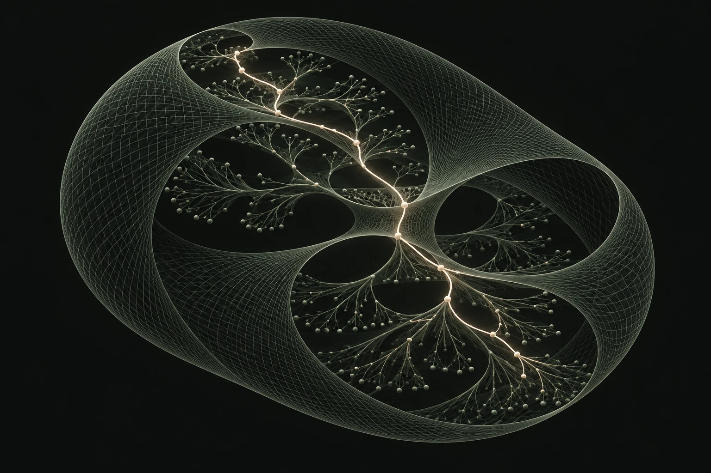

Felix Seitzer / Blog
Notizen & Perspektiven.
Persönliche Perspektiven auf Intelligenz, Abstraktion und die Fragen, die mich beschäftigen.
Mein erster Essay · Englisch
Understanding requires constraint-respecting reasoning with deep abstractions.
Meine persönliche Perspektive auf das aktuelle KI-Paradigma: ARC-AGI, tiefe Abstraktionen und die Rolle von Constraints.
Essay lesen (Englisch)
Dieser Essay stellt meine persönliche Perspektive und meine Forschungsinteressen dar. Er ist keine peer-reviewte Veröffentlichung, und einige Argumente sind bewusst explorativ.